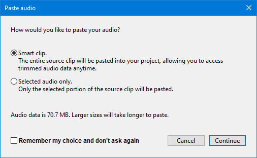

Tracks Behaviors Preferences
- Accessed by: (on a Mac )

Behaviors
- Select all audio, if selection required: If you select no audio before applying an effect, the effect will be automatically applied to all audio in all tracks.
This also applies to other menu items requiring an audio selection to be made, with the exception of and which are both deliberately restricted from this auto-selection to avoid accidental project deletion. Default setting for this is "off".
- Enable cut lines: Displays a red vertical line at the left edge of a cut edit. Click on the line at any time to restore the cut audio; if you restore in error, use to get the cut line back. To remove the line without restoring audio, right-click over it. will restore the line if you make a mistake. Default setting for this is "off".
See Preferences settings that affect Edit behavior for details of what this setting does.
- Enable dragging selection edges: Lets you expand or contract existing selection regions with the mouse after they have been created. If unchecked you must use the Selection Bar or keyboard to modify existing selection regions. See Audacity Selection for further details. Default setting for this is "on".
- Editing a clip can move other clips: When this is checked "off" (default setting) "Editing a clip can move" pins clips so that they cannot move in response to an edit in another clip. When removing content, any following clips will not be allowed to move back. When pasting, an error message will display if there is not enough room to paste without moving the following clips.
When this is checked "on" (non-default setting) if the track has been split into more than one clip, any clips following to right of the edit point can always move as necessary in response to pasting, cutting, deleting or other change that adds or removes content.
See Preferences settings that affect Edit behavior for details of what this setting does.
| Sync-Lock trumps (over-rides) this setting. If you have Sync-Lock enabled in the Tracks Menu, then clips can move even when this setting is turned "off". |
- "Move track focus" cycles repeatedly through tracks: When using the up and down arrow keys to change which track is focused, moving the focus off one end (top or bottom) makes the focus jump to the other end. Default setting for this is "off".
- Typing Creates New Labels: The default setting is "off", when enabled "on" if there is already a label track that has the yellow focus border, you do not need to use "Add Label at Selection" or its Ctrl + B shortcut to create a new label. Just type your required label text to create a new label at the position of the editing cursor or selection region. If the label track does not have focus, use the Up or Down arrow keys on your keyboard to move focus into the label track.
When this preference is disabled (default), typing never creates a label in the focused label track. This lets you use shortcuts (for example, transport shortcuts to play audio related to the editing cursor or selection) without accidentally creating an unwanted label. When you want to create a new label, use "Add Label at Selection" or Ctrl + B or "Add Label at Playback Position" Ctrl + M. Default setting for this is "off".
- Use dialog for the name of new label: This is off by default, but when enabled creating a label will pop up a dialog box for you to enter the label name (rather than the default behavior of opening the new label itself for editing). When the dialog is closed, focus is returned to the track which was the focus before the dialog opened. This functionality is primarily provided to aid Visually Impaired users who use screen readers, but may be useful to normally sighted users too.
| Note that setting this to be "on" will also affect the editing of Clip-names, causing their edits to be effected via a dialog rather than editing directly in the Clip-name |
- Enable scrolling left of zero: Enables scrolling to the left of time zero on the Timeline. The default setting is "off". This can make Scrubbing from the start or end of the track easier when using pinned play head.
- Advanced vertical zooming: When enabled, you can use left-click gestures in the Vertical Scale to make vertical zooms in audio tracks and note tracks. Default is "off", with such left-clicking disabled.
- Button: The button on the Track Control Panels can be set to behave in three different modes:
- "Multi-track" (default): this will suit those used to mixing desks and other professional audio software. Any number of tracks can be made "solo" (that is, active/live) so that they mix together, but if any Solo button is down, the mute buttons have no effect. If you want the Solo button to play only one track at a time (so that clicking it releases any other solo buttons), hold down Shift when clicking .
- "Simple": "Solo" means as it does in common parlance - a track made solo is the only one that can be heard. If a track is solo, the mute buttons are set down on all the other tracks, so that solo is just a shortcut way of muting all tracks except one. If on any occasion you want the Solo button to select multiple tracks for listening, hold down Shift when clicking Solo.
- "None": has no solo buttons, so you select the tracks you want to play or export by un-muting them (clicking the mute buttons so that they are up).
- When using Export Selected Audio, however, Audacity will Export the selection from all selected tracks even if some if those tracks are grayed-out and inaudible on playback.
|
Pasted audio
When you copy selected audio from one project to another there are three options that you can set with this preference:
- Smart clip: The entire source clip will be pasted into your project, enabling you to access and retrieve trimmed audio data at any time.
Since this is pasting the whole clip or track it is likely to take longer and occupy more disk space.
- Selected audio only: Only the selected portion of the source clip will be pasted.
This is likely to be quicker and occupy a lot less disk space as only the selected data is copied to the other project.
- Ask me each time (default): the following dialog will be shown each time a selection is pasted into a different project.
This enables you to make the decision each time you copy a section to a different project.
- 
| The figure reported for the audio data size is always the figure for the full source clip and not the size of the selection, regardless of which option you choose. |